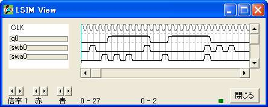
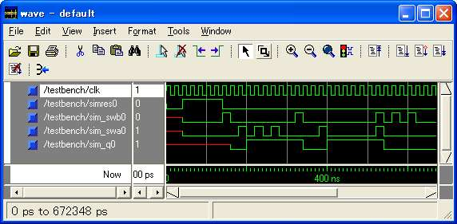
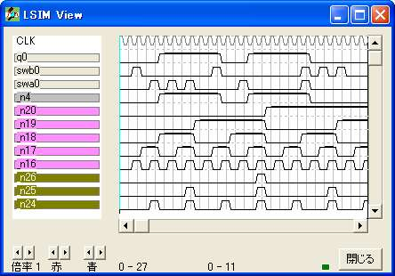

{ =============================================== }
{ チャタリング除去 }
{ =============================================== }
logicname sample
{ =============================================== }
{ 実効譜 }
{ =============================================== }
entity main
input swa,swb;
output q;
bitr regq;
if (swb)
regq=0;
else
if (swa)
regq=1;
else
regq=regq;
endif
endif
q=regq;
ende
{ =============================================== }
{ 機能実行譜 }
{ =============================================== }
entity sim
output swa,swb;
output q;
bitr tc[5];
input simres;
part main(swa,swb,q)
if (!simres) tc=tc+1; endif
switch(tc)
case 1: swb=1;
case 3: swa=1;
case 5: swa=1;
case 7: swa=1;
case 10: swb=1;
case 13: swa=1;
case 20: swa=1; swb=1;
case 22: swb=1;
case 24: swb=1;
endswitch
ende
endlogic

library IEEE;
use IEEE.std_logic_1164.all;
entity main is
port(clk : in std_logic;
swb0 : in std_logic;
swa0 : in std_logic;
q0 : out std_logic);
end main;
architecture RTL of main is
signal n_n4 : std_logic ;
begin
process(clk) begin
if (clk' event and clk='1') then
n_n4 <= (not swb0 and swa0)
or (n_n4 and not swb0 and not swa0) ;
end if;
end process;
q0 <= (n_n4) ;
end RTL;
library IEEE;
use IEEE.std_logic_1164.all;
entity sim is
port(clk : in std_logic;
sim_swb0 : out std_logic;
sim_swa0 : out std_logic;
sim_q0 : out std_logic;
simres0 : in std_logic);
end sim;
architecture RTL of sim is
signal n_n4 : std_logic ;
signal n_n16 : std_logic ;
signal n_n17 : std_logic ;
signal n_n18 : std_logic ;
signal n_n19 : std_logic ;
signal n_n20 : std_logic ;
signal n_n30 : std_logic ;
signal n_n31 : std_logic ;
signal n_n32 : std_logic ;
signal swb0 : std_logic ;
signal swa0 : std_logic ;
signal q0 : std_logic ;
begin
process(clk) begin
if (clk' event and clk='1') then
n_n4 <= (not swb0 and swa0)
or (n_n4 and not swb0 and not swa0) ;
n_n16 <= (not n_n16 and not simres0) ;
n_n17 <= (not n_n17 and n_n16 and not simres0)
or (n_n17 and not n_n16 and not simres0) ;
n_n18 <= (not n_n18 and n_n17 and n_n16 and not simres0)
or (n_n18 and not simres0 and not n_n30) ;
n_n19 <= (not n_n19 and n_n18 and n_n17 and n_n16 and not simres0)
or (n_n19 and not simres0 and not n_n31) ;
n_n20 <= (not n_n20 and n_n19 and n_n18 and n_n17 and n_n16 and not simres0)
or (n_n20 and not simres0 and not n_n32) ;
end if;
end process;
q0 <= (n_n4) ;
n_n30 <= (n_n17 and n_n16 and not simres0) ;
n_n31 <= (n_n18 and n_n17 and n_n16 and not simres0) ;
n_n32 <= (n_n19 and n_n18 and n_n17 and n_n16 and not simres0) ;
swb0 <= (n_n16 and not n_n17 and not n_n18 and not n_n19 and not n_n20)
or (not n_n16 and n_n17 and not n_n18 and n_n19 and not n_n20)
or (not n_n16 and not n_n17 and not n_n18 and n_n19 and n_n20)
or (not n_n16 and n_n18 and not n_n19 and n_n20) ;
swa0 <= (not n_n16 and not n_n17 and n_n18 and not n_n19 and n_n20)
or (n_n16 and n_n17 and not n_n19 and not n_n20)
or (n_n16 and n_n18 and not n_n19 and not n_n20)
or (n_n16 and not n_n17 and n_n18 and not n_n20) ;
sim_swb0 <= swb0 ;
sim_swa0 <= swa0 ;
sim_q0 <= q0 ;
end RTL;
library IEEE;
use IEEE.std_logic_1164.all;
entity TESTBENCH is
end TESTBENCH ;
architecture behavior of TESTBENCH is
component sim
port(clk : in std_logic;
sim_swb0 : out std_logic;
sim_swa0 : out std_logic;
sim_q0 : out std_logic;
simres0 : in std_logic);
end component ;
constant CLK_CYCLE : Time := 20 ns ;
signal clk : std_logic ;
signal simres0 : std_logic ;
signal sim_swb0 : std_logic ;
signal sim_swa0 : std_logic ;
signal sim_q0 : std_logic ;
begin
unit : sim port map (
clk => clk,
sim_swb0 => sim_swb0,
sim_swa0 => sim_swa0,
sim_q0 => sim_q0,
simres0 => simres0);
process begin
clk <= '1';
wait for CLK_CYCLE/2;
clk <= '0';
wait for CLK_CYCLE/2;
end process;
process begin
simres0 <= '0';
wait for CLK_CYCLE*2;
simres0 <= '1';
wait for CLK_CYCLE*5;
simres0 <= '0';
wait for CLK_CYCLE*30;
end process;
end;

